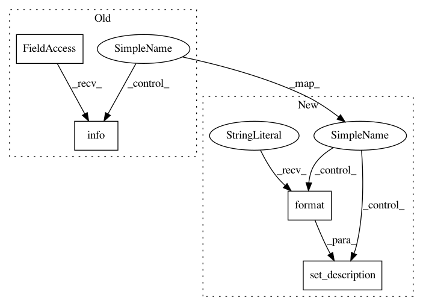

bc67274a0ed40ca12a8eeb5ce423c6de2191cd9c,pimp/evaluator/forward_selection.py,ForwardSelector,run,#ForwardSelector#,38
Before Change
self.logger.info("%s: %.4f" % (best_parameter, lowest_error))
self.evaluated_parameter_importance[best_parameter] = lowest_error
else:
self.logger.info("%s: %.4f" % (best_parameter.name, lowest_error))
self.evaluated_parameter_importance[best_parameter.name] = lowest_error
all_res = {"imp": self.evaluated_parameter_importance, "order": list(self.evaluated_parameter_importance.keys())}
return all_res
After Change
self.logger.info("%s: %.4f" % (best_parameter, lowest_error))
self.evaluated_parameter_importance[best_parameter] = lowest_error
else:
pbar.set_description("{: >.30s}: {: >7.4f} (OOB)".format(best_parameter.name, lowest_error))
self.evaluated_parameter_importance[best_parameter.name] = lowest_error
all_res = {"imp": self.evaluated_parameter_importance, "order": list(self.evaluated_parameter_importance.keys())}
return all_res
In pattern: SUPERPATTERN
Frequency: 3
Non-data size: 4
Instances
Project Name: automl/ParameterImportance
Commit Name: bc67274a0ed40ca12a8eeb5ce423c6de2191cd9c
Time: 2017-12-07
Author: biedenka@informatik.uni-freiburg.de
File Name: pimp/evaluator/forward_selection.py
Class Name: ForwardSelector
Method Name: run
Project Name: automl/ParameterImportance
Commit Name: bc67274a0ed40ca12a8eeb5ce423c6de2191cd9c
Time: 2017-12-07
Author: biedenka@informatik.uni-freiburg.de
File Name: pimp/evaluator/fanova.py
Class Name: fANOVA
Method Name: plot_result
Project Name: automl/ParameterImportance
Commit Name: bc67274a0ed40ca12a8eeb5ce423c6de2191cd9c
Time: 2017-12-07
Author: biedenka@informatik.uni-freiburg.de
File Name: pimp/evaluator/incumbent_neighborhood.py
Class Name: IncNeighbor
Method Name: run